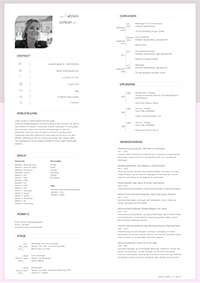
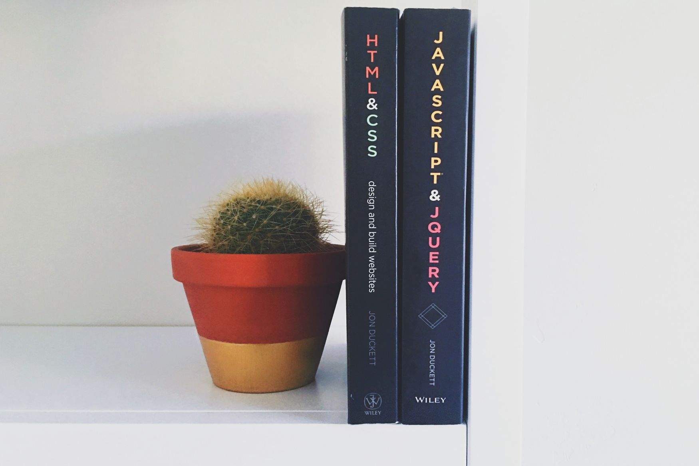
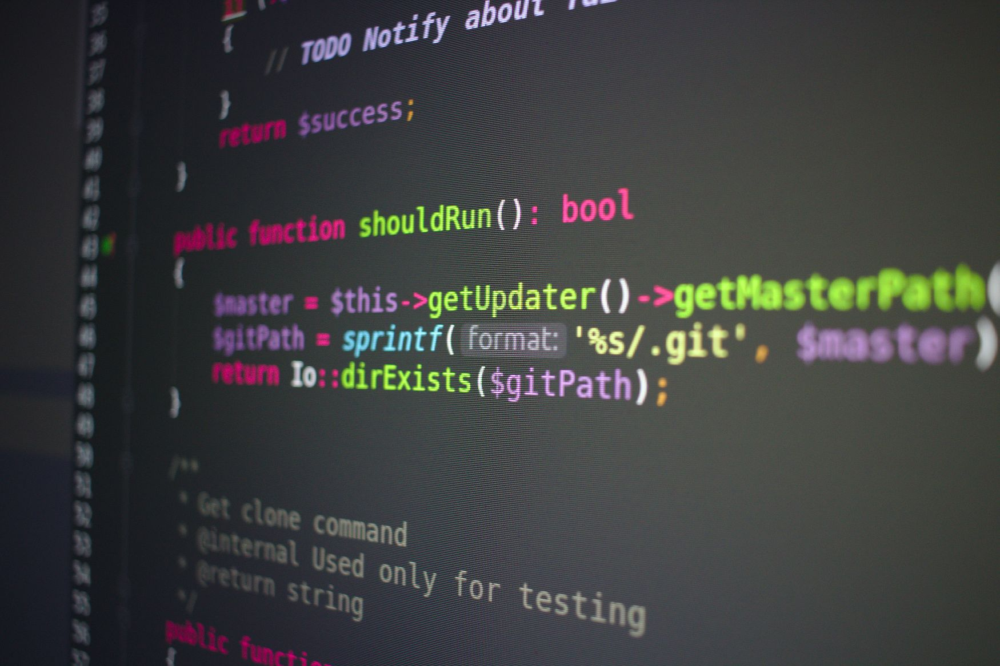

About me
"Ik ben een doorzetter,
die af en toe ook niet
meer weet wat te doen,
maar toch ga ik ervoor."
Ik ben een sociaal en creatief iemand met een groot verantwoordelijkheidsgevoel.
Doordat ik stevig in mijn schoenen sta, weet ik mij uitstekend te redden in stressvolle
Graag werk ik in een groep waar teamspirit hoog in het vaandel wordt gedragen en waar het wederzijdse
leerproces nooit stil staat.
Ik vind nieuwe professionele uitdagingen altijd zeer interessant en doe graag nieuwe kennis op,
werk efficiënt zelfstandig en ben van mening dat overleg met collega's alleen maar bijdraagt om tot een degelijk
resultaat te komen tegen de beoogde deadline.
Curriculum Vitae
download op naam! Katr!en.com
Hobby's
Vooral in beweging blijven, fitness, wandelen
Kookouder Klj
Lezen
- html & css
- javascript
- php
- scss
- drupal
- photoshop